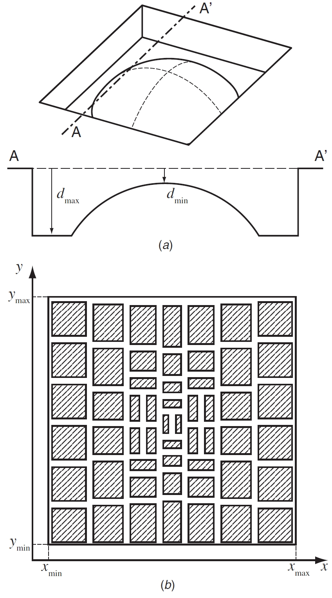

MEMS 3次元加工

赤外線を集光する光学レンズでは3次元のシリコン加工が要求される。本研究では、x, y方向に深さが変化し、垂直壁があり、表面が滑らかな形状を作製する方法を提案する。矩形の開口を持つマスクデザインを用いて、まず異方性エッチングにより3次元形状を大まかに形成し、さらに等方性エッチングで表面を平滑化するという2段のエッチング工程を行った。エッチング深さおよび面積と矩形開口部のアスペクト比（長さと高さの比）の関係を実験的に求め、この関係に基づいて矩形開口を設計する手順を示した。垂直な壁に囲まれた直径150μm、高さ4.3μmの凸型マイクロレンズを作製し、算術平均表面粗さが100 nmであることを確認した。
Publications
- 竹井裕介, 大堀敬広, 高畑智之, 菅哲朗, 岩瀬英治, 松本潔, 下山勲, “開口マスクによるシリコン3次元斜面形状の作製,” 電気学会論文誌E, vol. 130, no. 5, pp. 182–187, 2010. [Paper]
- Tomoyuki Takahata, Eiji Iwase, Kiyoshi Matsumoto, Isao Shimoyama, “Three-Dimensional Silicon Fabrication using Microloading Effects with Rectangular Aperture Mask,” Journal of Micromechanics and Microengineering, vol. 20, no. 7, article no. 0750022, 2010. [Paper] (Highlights of 2010, IOP select)